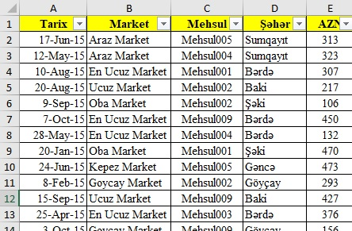

Bir çoxumuz Exceli işlərimizi avtomatlışdırmaq üçün istifadə edirik. İstəyirik ki, bir dəfə cədvəlimizi və funksiyalarımızı quraq və daha sonra eyni əziyyəti çəkmiyək. Bu şəkildə, həmin Excel faylında həm hesabatlarımız, həm də arxivlədiyimiz məlumatlar olsun və istənilən vaxt həmin bazadan istifadə edək.
Ancaq, bunu etməyə çalışarkən cədvəllərimiz üçün düzgün struktur yaratmır və bir müddət keçdikdən sonra iş çıxılmaz vəziyyət alır. Belə ki, cədvəllər elə bir vəziyyər alır ki, hesabat almaq çox çətinləşir hətta sadə filter əməliyyatı çox əziyyətli olmağa başlayır.
Bu məqalədə, əvvəlcə ən düzgün bazalama forması göstəriləcək, daha sonra isə, digər cədvəl növlərinin bizlərə nə kimi çətinlik yaratdığı haqqında yazmağa çalışacam. Əslində qeyd olunan metod heç də yeni deyil. SQL Server kimi proqramlarla işləyən proqramistlərin hər zaman istifadə etdiyi cədvəl növüdür. Ancaq Excel istifadəçilərində baza qurmaq seçimi sərbəst olduğu və bazalar haqqında ilkin məlumatlarının olmadığı üçün bu problem ilə tez tez qarşılaşılır.
Tabular Cədvəllər
Bazanın qurulması üçün ən uyğun cədvəl növüdür. Bu cədvəllərdə hər bir məlumat növü ayrı sütunda göstərilir. Bu formatlı cədvəllərdə istənilən məlumat almaq üçün filter tətbiqi və funksiyaların qurulumu daha sadə olur. Nümunə format bu şəkildədir.
Yeni məlumat əlavə olunduğunda cədvəlin son sətrindən sonra əlavə olunduğu üçün funksiyaları da yeniləməyə ehtiyac qalmır. Bu formada olan cədvəllərdən hesabat yaratmaq da daha asan olur. Baza yaradarkən bəzi nüanslara da diqqət yetirmək lazımdır: